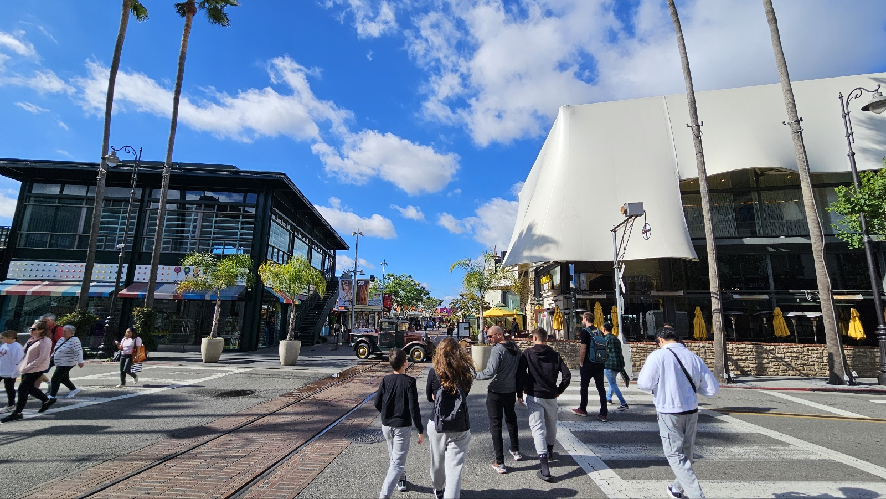

자기소개 : 안녕하세요 IT`s your life 14회차 유승원입니다
개발 공부를 차근차근 다시 해나가기 위해 지원하게 되었습니다!
취미 - 농구 볼링 축구 야구등 구기종목을 다 좋아합니다
직접 하는것도 좋아하고 경기를 보는것도 좋아합니다
물론 게임하는것도 좋아하고 다양한 게임에 관심이 많이 웬만한 게임은 다 해본것 같습니다 :)
음악 - 인디음악과 팝송을 좋아합니다 주로 듣는 가수는 경제환, Myles Smith, Teddy Swims등등 자주듣습니다
이름 : 유승원
나이 : 97년생
MBTI : infp
전공 : 정보통신공학과
거주지 : 서초구

여행을 다니는 것도 좋아합니다
해외여행을 주로 갔는데,
미국 일본 캐나다 베트남 태국 중국 등등 다양한 나라를 다녀 왔습니다
그중에 미국 LA에서 찍은 사진이 이뻐서 보여드릴게요 😀